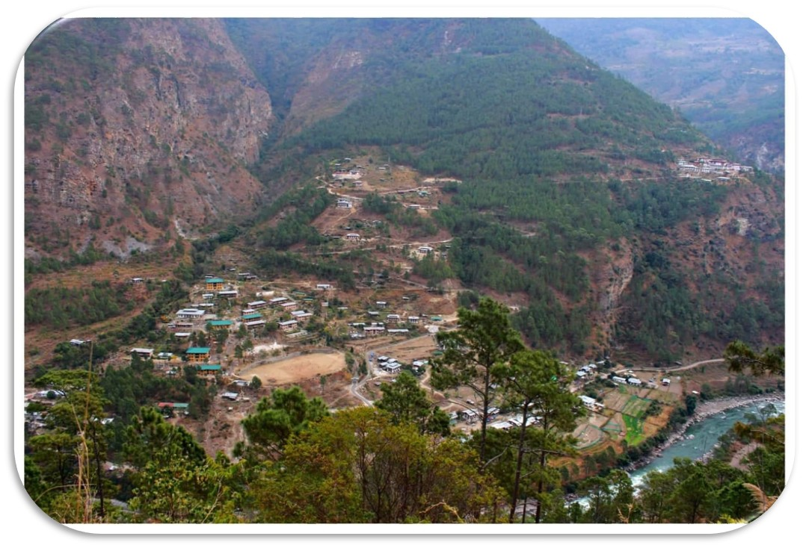

Welcome to Autsho School
Vision: To Nurture Patriotic, Competent and Morally upright Citizens
Mission: To provide holistic education through a lively environment and nurture intelligence and character in children
School Profile
The school is situated above the Lhuentse-Mongar Highway, precisely 37 kilometers from Mongar and 40 kilometers from Lhuentse. According to the 2008 edition of Sherig Saga, the name "Autsho" (ཨའུ་མཚོ) translates to "Sister Lake." In the local Cho-cha-nga-cha-Kha dialect, (ཨའུ) means "elder sister," and (མཚོ) means "lake." Legend has it that two sister lakes from upper Kurtoe fled southward along the Kurichu Valley for safety. When one of the lakes chose to stay behind, the area was named Autsho in her honor. Before the school was established, educating children was a significant challenge for the residents of Autsho and surrounding villages, who had to send their children to distant schools such as Wambur, Zangkhar, Lhuentse, and even Mongar. To address this, the local community petitioned the government to open a school. In March 1991, Autsho Primary School was established with 17 boys and 15 girls under the guidance of a single teacher, Mr. Kinley Dorji. As the number of students grew, the school’s facilities and grade levels expanded. In 2009, it was upgraded to a Middle Secondary School facilitated with boarding facilities. The first batch of Class X students took their board examinations in 2012. In 2016, the school was further upgraded to Autsho Central School and began receiving Central School benefits. Autsho Central School was further identified as the Special Education Need School on October 6th, 2019, as the only inclusive school in Lhuentse Dzongkhag to address the needs of children with disabilities. Today, the school serves the communities of Tsenkhar, Jarey, and Metsho Gewogs in Lhuentse Dzongkhag, as well as nearby areas in Mongar Dzongkhag, including Galangpong, Gumdrang (Mongar) and Takhambi. The school provides education from PP to Class X, offering boarding facilities and day meal to all day students.